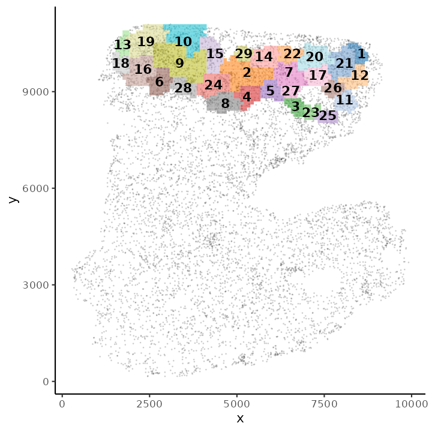
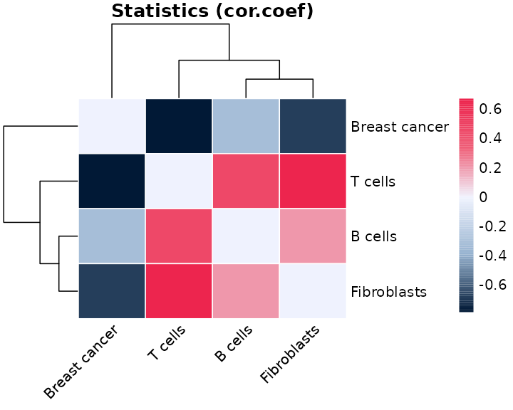
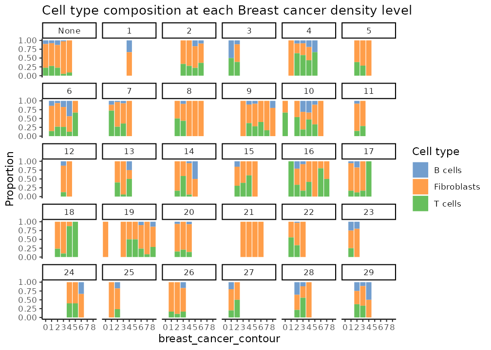

A quick start guide to the scider package
Ning Liu, Mengbo Li, Yunshun Chen
2023-09-26
Source:vignettes/Quick_start.Rmd
Quick_start.Rmdscider is an user-friendly R package providing functions to model the global density of cells in a slide of spatial transcriptomics data. All functions in the package are built based on the SpatialExperiment object, allowing integration into various spatial transcriptomics-related packages from Bioconductor. After modelling density, the package allows for serveral downstream analysis, including colocalization analysis, boundary detection analysis and differential density analysis.
Installation
if (!require("BiocManager", quietly = TRUE)) {
install.packages("BiocManager")
}
BiocManager::install("scider")The development version of scider can be installed from
GitHub:
devtools::install_github("ChenLaboratory/scider")Load data
In this vignette, we will use a subset of a Xenium Breast Cancer dataset.
data("xenium_bc_spe")In the data, we have quantification of 541 genes from 10000 cells.
spe## class: SpatialExperiment
## dim: 541 10000
## metadata(0):
## assays(1): counts
## rownames(541): ENSG00000121270 ENSG00000213088 ... BLANK_0444
## BLANK_0447
## rowData names(3): ID Symbol Type
## colnames(10000): cell_212124 cell_120108 ... cell_252054 cell_568560
## colData names(21): cell_id transcript_counts ... cell_type sample_id
## reducedDimNames(0):
## mainExpName: NULL
## altExpNames(0):
## spatialCoords names(2) : x_centroid y_centroid
## imgData names(1): sample_idWe also have cell-type annotations of these cells, there are 4 cell types.
table(colData(spe)$cell_type)##
## B cells Breast cancer Fibroblasts T cells
## 643 3550 4234 1573We can use the function plotSpatial to visualise the
cell position and color the cells by cell types.
plotSpatial(spe, color = cell_type, alpha = 0.8)Grid-based analysis
scider can conduct grid-based density analysis for
spatial transcriptomics data.
Density calculation
Before calculating density, we need to define cell type-of-interest (COI). In this case, all cell types are COIs.
coi <- unique(colData(spe)$cell_type)
coi## [1] "Fibroblasts" "Breast cancer" "T cells" "B cells"We can perform density calculation for each COI using function
gridDensity. The calculated density and grid information
are saved in the metadata of the SpatialExperimnet object.
spe <- gridDensity(spe, coi = coi)
names(metadata(spe))## [1] "grid_density" "grid_info"
metadata(spe)$grid_density## DataFrame with 11400 rows and 9 columns
## x_grid y_grid node_x node_y node density_fibroblasts
## <numeric> <numeric> <integer> <integer> <character> <numeric>
## 1 329.102 203.852 1 1 1-1 0.00352639
## 2 329.102 299.810 1 2 1-2 0.00432724
## 3 329.102 395.767 1 3 1-3 0.00526027
## 4 329.102 491.725 1 4 1-4 0.00633438
## 5 329.102 587.683 1 5 1-5 0.00755759
## ... ... ... ... ... ... ...
## 11396 9865.73 10663.2 100 110 100-110 0.00743260
## 11397 9865.73 10759.2 100 111 100-111 0.00601659
## 11398 9865.73 10855.2 100 112 100-112 0.00482908
## 11399 9865.73 10951.1 100 113 100-113 0.00384286
## 11400 9865.73 11047.1 100 114 100-114 0.00303176
## density_breast_cancer density_t_cells density_b_cells
## <numeric> <numeric> <numeric>
## 1 0.000124482 0.00200091 0.00308062
## 2 0.000158866 0.00269403 0.00447254
## 3 0.000207521 0.00360691 0.00639036
## 4 0.000278528 0.00478231 0.00893371
## 5 0.000385603 0.00624991 0.01215386
## ... ... ... ...
## 11396 0.00992645 1.85862e-05 0.000385502
## 11397 0.00715312 9.95949e-06 0.000337516
## 11398 0.00504125 5.53001e-06 0.000288967
## 11399 0.00348873 3.29144e-06 0.000242472
## 11400 0.00237981 2.14802e-06 0.000199856We can visualise the density of each COI using function
plotDensity.
plotDensity(spe, coi = coi[1])
Find Regions-of-interest (ROIs)
After obtaining grid-based density for each COI, we can then detect regions-of-interest (ROIs) based on density or select by user.
Detected by algorithm
To detect ROIs automatically, we can use the function
findROI.
The detected ROIs are saved in the metadata of the SpatialExperiment object.
spe <- findROI(spe, coi = coi)
metadata(spe)$roi## DataFrame with 1464 rows and 6 columns
## component members x y xcoord ycoord
## <factor> <character> <character> <character> <numeric> <numeric>
## 1 1 83-107 83 107 8228.13 10375.37
## 2 1 83-108 83 108 8228.13 10471.33
## 3 1 84-107 84 107 8324.46 10375.37
## 4 1 84-108 84 108 8324.46 10471.33
## 5 1 85-102 85 102 8420.79 9895.58
## ... ... ... ... ... ... ...
## 1460 29 53-104 53 104 5338.24 10087.5
## 1461 29 53-105 53 105 5338.24 10183.5
## 1462 29 53-106 53 106 5338.24 10279.4
## 1463 29 54-105 54 105 5434.57 10183.5
## 1464 29 54-106 54 106 5434.57 10279.4We can visualise the ROIs with function plotROI.
plotROI(spe)
Select ROI by user
Alternatively, users can select ROIs based on their own research
interest (drawn by hand). This can be done using function
selectRegion. This function will open an interactive window
with an interactive plot for users to zoom-in/-out and select ROI using
either a rectangular or lasso selection tool. Users can also press the
Export selected points button to save the ROIs as object in
the R environment.
selectRegion(metadata(spe)$grid_density, x.col = "x_grid", y.col = "y_grid")After closing the interactive window, the selected ROI has been saved
as a data.frame object named sel_region in the R
environment.
sel_regionWe can then use the postSelRegion to save the ROI in the
metadata of the SpatialExperiment object.
spe1 <- postSelRegion(spe, sel_region = sel_region)
metadata(spe1)$roiSimilarly, we can plot visualise the user-defined ROI with function
plotROI.
plotROI(spe1)Testing relationship between cell types
After defining ROIs, we can then test the relationship between any two cell types within each ROI or overall but account for ROI variation using a cubic spline or a linear fit.
This can be done with function corrDensity, by setting
the celltype1 and celltype2 parameters, the
modelling results are saved in the metadata of the SpatialExperiment
object.
model_result <- corDensity(spe)We can see the correlation between breast cancer and fibroblasts in each ROI.
model_result## DataFrame with 174 rows and 9 columns
## celltype1 celltype2 ROI ngrid cor.coef t
## <character> <character> <character> <numeric> <numeric> <numeric>
## 1 Fibroblasts Breast cancer 1 25 -0.4212512 -2.227535
## 2 Fibroblasts Breast cancer 2 106 -0.5961093 -7.571454
## 3 Fibroblasts Breast cancer 3 27 -0.9058793 -10.694243
## 4 Fibroblasts Breast cancer 4 42 -0.9245825 -15.348691
## 5 Fibroblasts Breast cancer 5 36 -0.0392948 -0.229303
## ... ... ... ... ... ... ...
## 170 T cells B cells 25 25 0.459082 2.478267
## 171 T cells B cells 26 29 0.865404 8.974262
## 172 T cells B cells 27 21 -0.248482 -1.118180
## 173 T cells B cells 28 38 0.628826 4.852386
## 174 T cells B cells 29 22 0.110237 0.496019
## df p.Pos p.Neg
## <numeric> <numeric> <numeric>
## 1 23 0.982010 1.79903e-02
## 2 104 1.000000 7.83173e-12
## 3 25 1.000000 4.06755e-11
## 4 40 1.000000 1.16320e-18
## 5 34 0.589996 4.10004e-01
## ... ... ... ...
## 170 23 1.04871e-02 0.989513
## 171 27 6.86205e-10 1.000000
## 172 19 8.61285e-01 0.138715
## 173 36 1.17842e-05 0.999988
## 174 20 3.12644e-01 0.687356We can also visualise the fitting using function
plotDensCor.
plotDensCor(spe, celltype1 = "Breast cancer", celltype2 = "Fibroblasts")Or, we can visualise the statistics between cell types using function
plotModStat with a heatmap.
plotCorHeatmap(model_result)
model_result2 <- corDensity(spe, by.roi = FALSE)
plotCorHeatmap(model_result2)
Cell-based analysis
Based on the grid density, we can ask many biological question about the data. For example, we would like to know if a certain cell type that are located in high density of breast cancer cells are different to the same cell type from a different level of breast cancer region.
cell annotation based on grid density
To address this question, we first need to divide cells into
different levels of grid density. This can be done using a contour
identification strategy with function getContour.
spe <- getContour(spe, coi = "Breast cancer")Different level of contour can be visualised with cells using
plotContour.
plotContour(spe, coi = "Breast cancer")
We can then annotate cells by their locations within each contour
using function allocateCells.
spe <- allocateCells(spe)
plotSpatial(spe, color = breast_cancer_contour, alpha = 0.5)
We can visualise cell type composition per level.
plotCellCompo(spe, coi = "Breast cancer")
plotCellCompo(spe, coi = "Breast cancer", by.roi = TRUE)
## R version 4.3.1 (2023-06-16)
## Platform: x86_64-pc-linux-gnu (64-bit)
## Running under: Ubuntu 22.04.3 LTS
##
## Matrix products: default
## BLAS: /usr/lib/x86_64-linux-gnu/openblas-pthread/libblas.so.3
## LAPACK: /usr/lib/x86_64-linux-gnu/openblas-pthread/libopenblasp-r0.3.20.so; LAPACK version 3.10.0
##
## locale:
## [1] LC_CTYPE=C.UTF-8 LC_NUMERIC=C LC_TIME=C.UTF-8
## [4] LC_COLLATE=C.UTF-8 LC_MONETARY=C.UTF-8 LC_MESSAGES=C.UTF-8
## [7] LC_PAPER=C.UTF-8 LC_NAME=C LC_ADDRESS=C
## [10] LC_TELEPHONE=C LC_MEASUREMENT=C.UTF-8 LC_IDENTIFICATION=C
##
## time zone: UTC
## tzcode source: system (glibc)
##
## attached base packages:
## [1] stats4 stats graphics grDevices utils datasets methods
## [8] base
##
## other attached packages:
## [1] sf_1.0-14 SpatialExperiment_1.10.0
## [3] SingleCellExperiment_1.22.0 SummarizedExperiment_1.30.2
## [5] Biobase_2.60.0 GenomicRanges_1.52.0
## [7] GenomeInfoDb_1.36.3 IRanges_2.34.1
## [9] S4Vectors_0.38.2 BiocGenerics_0.46.0
## [11] MatrixGenerics_1.12.3 matrixStats_1.0.0
## [13] scider_0.99.0 ggplot2_3.4.3
##
## loaded via a namespace (and not attached):
## [1] RColorBrewer_1.1-3 jsonlite_1.8.7
## [3] magrittr_2.0.3 spatstat.utils_3.0-3
## [5] magick_2.7.5 farver_2.1.1
## [7] rmarkdown_2.25 fs_1.6.3
## [9] zlibbioc_1.46.0 ragg_1.2.5
## [11] vctrs_0.6.3 memoise_2.0.1
## [13] spatstat.explore_3.2-3 DelayedMatrixStats_1.22.6
## [15] RCurl_1.98-1.12 janitor_2.2.0
## [17] htmltools_0.5.6 S4Arrays_1.0.6
## [19] Rhdf5lib_1.22.1 rhdf5_2.44.0
## [21] sass_0.4.7 KernSmooth_2.23-21
## [23] bslib_0.5.1 htmlwidgets_1.6.2
## [25] desc_1.4.2 plotly_4.10.2
## [27] lubridate_1.9.2 cachem_1.0.8
## [29] igraph_1.5.1 mime_0.12
## [31] lifecycle_1.0.3 pkgconfig_2.0.3
## [33] Matrix_1.5-4.1 R6_2.5.1
## [35] fastmap_1.1.1 GenomeInfoDbData_1.2.10
## [37] shiny_1.7.5 snakecase_0.11.1
## [39] digest_0.6.33 colorspace_2.1-0
## [41] rprojroot_2.0.3 tensor_1.5
## [43] dqrng_0.3.1 textshaping_0.3.6
## [45] beachmat_2.16.0 lwgeom_0.2-13
## [47] labeling_0.4.3 fansi_1.0.4
## [49] spatstat.sparse_3.0-2 timechange_0.2.0
## [51] mgcv_1.8-42 httr_1.4.7
## [53] polyclip_1.10-4 abind_1.4-5
## [55] compiler_4.3.1 proxy_0.4-27
## [57] withr_2.5.0 BiocParallel_1.34.2
## [59] DBI_1.1.3 HDF5Array_1.28.1
## [61] R.utils_2.12.2 DelayedArray_0.26.7
## [63] classInt_0.4-10 rjson_0.2.21
## [65] units_0.8-4 tools_4.3.1
## [67] httpuv_1.6.11 goftest_1.2-3
## [69] R.oo_1.25.0 glue_1.6.2
## [71] nlme_3.1-162 rhdf5filters_1.12.1
## [73] promises_1.2.1 grid_4.3.1
## [75] generics_0.1.3 isoband_0.2.7
## [77] gtable_0.3.4 spatstat.data_3.0-1
## [79] class_7.3-22 R.methodsS3_1.8.2
## [81] tidyr_1.3.0 data.table_1.14.8
## [83] utf8_1.2.3 XVector_0.40.0
## [85] spatstat.geom_3.2-5 pillar_1.9.0
## [87] stringr_1.5.0 limma_3.56.2
## [89] later_1.3.1 splines_4.3.1
## [91] dplyr_1.1.3 lattice_0.21-8
## [93] deldir_1.0-9 tidyselect_1.2.0
## [95] locfit_1.5-9.8 scuttle_1.10.2
## [97] knitr_1.44 edgeR_3.42.4
## [99] xfun_0.40 DropletUtils_1.20.0
## [101] pheatmap_1.0.12 stringi_1.7.12
## [103] lazyeval_0.2.2 yaml_2.3.7
## [105] evaluate_0.21 codetools_0.2-19
## [107] tibble_3.2.1 cli_3.6.1
## [109] xtable_1.8-4 systemfonts_1.0.4
## [111] munsell_0.5.0 jquerylib_0.1.4
## [113] Rcpp_1.0.11 spatstat.random_3.1-6
## [115] parallel_4.3.1 ellipsis_0.3.2
## [117] pkgdown_2.0.7 sparseMatrixStats_1.12.2
## [119] bitops_1.0-7 viridisLite_0.4.2
## [121] e1071_1.7-13 scales_1.2.1
## [123] purrr_1.0.2 crayon_1.5.2
## [125] rlang_1.1.1